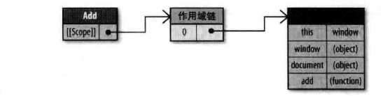

高性能JavaScript读书笔记
前言
本书发行较早，研究讨论的范畴也停留在html4时代，不排除当中有些规则现如今已经不适用，但是依然有参考意义。故而看一遍，记录一下。
争对原生的老的JavaScript语法，平时较少使用的，本篇不作记录。具体可参考本书中的相关章节作参考。
读书笔记
第一章 加载和执行
脚本位置
推荐将所有的script标签尽可能放到body标签的底部，以尽可能减少对整个页面下载的影响
1 |
|
组织脚本
可以把多个文件合并成一个，只需要引用一个script标签，就可以减少性能消耗
1 |
|
无阻塞的脚本
在页面加载完成之后才加载JavaScript代码
延迟的脚本
- defer属性指明本元素所含的脚本不会修改DOM，因此代码能安全地延迟执行。
- 任何带有defer属性的script元素在DOM完成之前都不会执行，无论是内嵌或外链脚本都是如此。
- 带有defer属性的script元素实在windows.onload事件处理器执行前被调用
动态脚本元素
利用标准的DOM方法创建一个新的script元素
1 | var script = document.createElement("script"); |
推荐无阻塞的模式
向页面中添加大量JavaScript的推荐做法只需两步：
- 先添加动态加载所需的代码
- 然后加载初始化页面所需的剩下的代码
老的一些框架：
- YUI3的方式：由页面中少量的代码来加载丰富的功能组件。**（雅虎团队于2014年停止更新）
- LazyLoad类库：还是要建议尽量减少文件数，每次加载依然是一个独立的HTTP请求
- LABjs
模块化框架
- sea.js：CMD规范
- requre.js：AMD规范
第二章 数据存取
管理作用域
作用域概念是理解JavaScript的关键所在，不仅仅从性能角度，还包括从功能的角度。 作用域对JavaScript有许多影响，从确定哪些变量可以被函数访问，到确定this的赋值。JavaScript作用域同样关系到性能，要理解速度和作用域的关系，首先要正确地理解作用域的工作原理。
作用域链和标识符解析
每一个JavaScript函数都表示为一个对象，更确切地说，是Function对象的一个实例。Function对象同其他对象一样，拥有可以编程访问的属性， 和一系列不能通过代码访问而仅供JavaScript引擎存取的内部属性。其中一个内部属性是[[Scope]]。内部属性[[Scope]]包含了 一个函数被创建的作用域中对象的集合。这个集合被称为函数的作用域链。
1 | function add(num1, num2) { |
scope作用域链

标识符解析的性能
如果某个垮作用域的值在函数中被引用一次已上，那么就把它存到局部变量里。可行的方法是：将全局变量的引用存储在一个局部变量中，然后使用这个局部变量代替全局变量。
改变作用域链
with语句和try-catch语句可以临时改变执行环境的作用域链。
注：with语句不推荐使用；try-catch语句慎用，catch子句中最好委托专门函数处理异常情况。
动态作用域
无论是with语句还是try-catch语句的catch子句，或是包含eval()的函数，都是被认为动态作用域。动态作用域只存在于代码执行过程中，因此无法查看代码结构而查看出来具体的执行结果。
在确实有必要时才推荐使用动态作用域。
闭包、作用域和内存
使用闭包可能会导致性能问题。
1 | function() { |
注意上述代码中用到两个标识符，id和saveDocument，它们的位置在作用域链第一个对象之后。这就是使用闭包最需要关注的性能点：在频繁访问跨作用域的标识符时，每次访问都会带来性能损失。
对象成员
原型
JavaScript中的对象是基于原型（Prototype）的。原型是其它对象的基础，它的定义并实现了一个新建的对象所必须包含的成员列表
示例：
1 | var book = { |
book对象中并没有定义toString方法，但是alert的时候并没有报错，原因toString方法是继承原型而来。
实例和原型的关系，如下图所示：
可以用hasOwnProperty()**方法来判断对象中是否包含特定的实例成员。
要确定对象是否包含特定的属性，可以使用in**操作符。
原型链
可以定义并使用构造函数来创建另一种类型的原型。
1 | function Book(title, publisher) { |
上述俩实例共享原型链，如下图所示：
但是，对象在原型链中存在的位置越深，搜索的速度就会越慢。也就是说，搜索实例成员比从字面量或局部变量中读取的数据代价更高。因而也会影响性能消耗。
嵌套成员
由于对象成员可能包含其他成员，例如：window.location.href，对象成员嵌套的越深，读取速度就会越慢。
缓存对象成员值
应当注意，只在必要时使用对象成员。例如：在同一个函数中没有必要多次读取同一个对象成员。
1 | function hasEitherClass(element, className1, className2) { |
已上代码中，elment.className被读取了两次。此时就可以将该元素的值保存在一个临时变量中，以减少查找的开销。
小结
在JavaScript中，数据存储的位置会对代码整体性能产生重大的影响。数据存储共有4种方式：字面量、变量、数组项、对象成员。它们有着各自的性能特点。
- 访问字面量和局部变量的速度最快，相反，访问数组元素和对象成员相对较慢。
- 由于局部变量存在于作用域链的起始位置，因此出问局部变量比访问跨作用域变量更快。变量在作用域链中的位置越深，访问所需时间就越长。由于全局变量总处在作用域链的最末端，因此访问速度也是最慢的。
- 避免使用with语句，因为它会改变执行环境作用域链。同样，try-catch语句中的catch子句也有同样的影响，因此也要小心使用。
- 嵌套的对象成员会明显影响性能，尽量少用。
- 属性或方挂在原型链中的位置越深，访问它的速度也越慢。
- 通常来说，你可以通过吧常用的对象成员、数组元素、跨域变量保存在局部变量中来改善JavaScript性能，因为局部变量访问速度更快。
DOM编程
DOM访问与修改
innerHtml对比DOM方法
在一个对性能有着苛刻要求的操作中更新一大段HTML，推荐使用innerHTML，因为它在绝大部分浏览器中都运行的更快。
节点克隆
使用DOM方法更新页面内容的另一个途径就是克隆已有元素，而不是创建新元素-换句话说，就是使用element.cloneNode()(element表示已有节点)替代document.createElement()。
HTML集合（HTML Collections）
HTML集合是包含了DOM节点引用的类型数组对象。以下方法的返回值就是一个集合：
- document.getElementByName()
- document.getElementByClassName()
- document.getElementByTagName()
- document.images 页面中所有img元素
- document.links 所有a元素
- document.forms 所有表单元素
- document.forms[0].elements 页面中第一个表单的所有字段
上述方法返回的HTML集合一直与文档保持着连接，每次你需要最新的信息时，都会重复执行查询的过程！
例如，一个意外的死循环
注：本实例个人编写，非书中示例，代码注释行为书中事例。补了一个JQuery选择器选择结果，JQuery选择器返回的不是HTML集合，而是JQuery封装的对象
1 |
|
输出：
JavaScript length = 1
test.html:14 JQuery length = 1
test.html:13 JavaScript length = 2
test.html:14 JQuery length = 1
test.html:13 JavaScript length = 3
test.html:14 JQuery length = 1
test.html:13 JavaScript length = 4
test.html:14 JQuery length = 1
test.html:13 JavaScript length = 5
test.html:14 JQuery length = 1
test.html:13 JavaScript length = 6
test.html:14 JQuery length = 1
test.html:13 JavaScript length = 7
test.html:14 JQuery length = 1
test.html:13 JavaScript length = 8
test.html:14 JQuery length = 1
test.html:13 JavaScript length = 9
test.html:14 JQuery length = 1
test.html:13 JavaScript length = 10
test.html:14 JQuery length = 1
上述死循环示例的解决方案：将获取的HTML集合的长度存在临时变量中即可。
同样，多次集合元素时使用局部变量
遍历DOM
DOM API提供了多种方法来读取文档结构中的特定部分。当你需要从多种方案中选择时，最后为特定的操作选择最高效的API。
获取DOM元素
通常你需要从某一个DOM元素开始，操作周围的元素，或者递归查找所有子节点。你可以使用childNodes得到元素集合，或者使用nextSibling来获取每个相邻元素。
重绘和重排
当页面布局和几何属性改变时就需要“重排”。下述情况中会发生重排：
- 添加或删除可见的DOM元素
- 元素位置改变
- 元素尺寸改变（包括：外边距、内边距、边框厚度、宽度、高度等属性改变）、
- 内容改变，例如：文本改变或图片被另一个不同尺寸的图片替代。
- 页面渲染器初始化。
- 浏览器窗口尺寸改变
渲染树变化的排队与刷新
由于每次重排都会产生计算消耗，大多数浏览器通过队列化修改并批量执行来优化重排过程。获取布局信息的操作会导致队列刷新，比如以下方法：
- offsetTop，offsetLeft，OffsetWidth，offsetHeight
- scrollTop，scrollLeft，scrollWidth，scrollHeight
- clientTop，clientLeft，clientWidth，clientHeight
- getComputedStyle()
在修改样式的过程中，最好避免使用上面列出的属性。它们都会属性渲染队列，即使你是在获取最近未发生改变的或者与最新改变无关的布局信息。
最小化重绘和重排
重绘和重排可能代价非常昂贵，因此一个好的提高程序响应速度的策略就是减少此类操作的发生。为了减少发生次数，应该合并多次对DOM和样式的修改，然后一次处理掉。
批量修改DOM
当你需要对DOM元素进行一系列操作时，可以通过以下步骤来减少重绘和重排次数：
- 使元素脱离文档流。
- 对其应用多重改变。
- 把元素带回文档中。
有三种基本方法可以使DOM脱离文档：
- 隐藏元素，应用修改，重新显示。
- 使用文档片段（document fragment）在当前DOM之外构建一个子树，再把它拷贝到文档。
- 将原始元素拷贝到一个脱离文档的节点中，修改副本，完成后再替换原始元素。
文档片段：
注：JQuery内部append方法就是文档碎片插入的方式
1 | var fragment = document.createDocumentFragment(); |
节点备份：
1 | var old = document.getElementById('mylist'); |
缓存布局信息
一段低效的代码
1 | myElement.style.left = 1 + myElement.offsetLeft + 'px'; |
方法低效的原因：元素每次移动时都会查询偏移量，导致浏览器属性渲染队列而不利于优化。
改进的方案是：获取一次起始位置的值，然后将其赋值给一个变量
让元素脱离动画流
展开/折叠的方式来显示和隐藏部分页面是一种常见的交互模式。但是当页面顶部的一个动画推移页面整个余下的部分时，会导致一次代价昂贵的大规模重排。当这个渲染树中需要重新计算的节点越多，情况就会越糟糕。
使用以下步骤可以避免页面中大部分重排：
- 使用绝对位置定位页面上的动画元素，将其脱离文档流。
- 让元素动起来。当它扩大时，会临时覆盖部分页面。但这只是页面一个小区域的重绘过程，不会产生重排并重绘页面的大部分内容。
- 当动画结束时恢复定位，从而只会下移一次文档的其它元素。
IE和:hover
当元素很多时，应避免使用这种效果，比如很大的表格或者很长的列表。
事件委托
当页面中存在大量元素，而且每一个都要一次或多次绑定事件处理器（比如onclick）时，这种情况可能会影响性能。每绑定一个事件处理器都是有代价的，它约么是加重了页面负担（更多的标签或JavaScript代码），要么是增加了运行期的执行时间。
一个简单而优雅的处理DOM事件的技术是事件委托
例如，在一组id=’menu’的ul列表，下有若干li标签，其中一些li标签中是链接a标签，此时要点击a标签之后，Ajax动态请求数据，填充其余。
此时可以使用事件委托，而无需针对每一个a标签绑定事件
1 | document.getElementById('menu').onclick = function(e) { |
小结
访问和操作DOM是现代Web应用的重要部分。但每次穿越连接ECMAScript和DOM两个岛屿之间的桥梁，都会被收取 “过桥费”。为了减少DOM编程带来的性能损失， 请记住以下几点：
- 最小化DOM访问次数，尽可能在JavaScript端处理。
- 如果需要多次访问某个DOM节点，请使用局部变量存储色的引用。
- 小心处理HTML集合，因为它实时连系着底层文档。把集合的长度缓存到一个变量中，并在选代中使用它。 如果需要经常操作集合， 建议把它拷贝到一个数组中。
- 如果可能的话，使用速度更快的APl，比如querySelectorAll()和firstElementChild
- 要留意重绘和重排s批量修改样式时, “离线” 操作DOM树，使用缓存，并减少访 问布局信息的次数。
- 动画中使用绝对定位，使用拖放代理。
- 使用事件委托来减少事件处理器的数量。
第四章 算法和流程控制
循环性能
for-in循环要比其它几种明显要慢。除非明确需要迭代一个属性数量未知的对象，否则应该避免使用for-in循环。
注意：不要使用for-in来遍历数组成员
最小化属性查找：
1 | for (var i = 0, len = items.length; i < len; i++) { |
也可以倒序循环，例如:
1 | for (var i = items.length; i--; ) { |
其中，控制条件与true值比较时，任何非零数会自动转换为true，而零值等同于false；
减少迭代次数：“达夫设备（Duff’s Device）”
典型实现：
1 | // credit: Jeff Greeberg |
Duff’s Device背后基本原理：每次循环中最多可调用8次process()。循环的迭代次数为总数除以8.由于不是所有数字都能被8整除，变量startAt用来存放余数，表示第一次循环中应调用多少次process()。如果是12次，那么第一次循环会调用process()4次，第二次循环调用process()8次，用两次循环替代了12次循环。
改进版本：
1 | // credit: Jeff Greeberg |
是否使用Duff’s Device，取决于整体的迭代次数，如果迭代次数小于1000，很难看到性能提升。如果迭代次数超过1000，那么Duff’s Device的执行效率将明显提升。
基于函数的迭代
forEach()函数。在运行速度要求严格是，基于函数的迭代不是合适的选择。
if-else对比switch
使用if-else还是switch，最流行的方法是基于测试条件的数量来判断：条件数量越大，越倾向于使用switch而不是if-else.
优化if-else
确保最可能出现的条件放在首位
查找表（Lookup Tables）
JavaScript中可以使用数组和普通对象来构建查找表，通过查找表访问数据比用if-else或switch快得多，特别是在条件语句数量很大的时候。
1 | swith(value) { |
swith表达式代码所占的空间可能与他的重要性不成比例。整个结构可以使用一个数组作为查找表来替代：
1 | // 将返回值集合存入数组 |
当单个键和单个值之间存在逻辑映射时（正如前面的例子），查找表的优势就能体现出来。switch语句更适合于每个键都需要对应一个独特的动作或一系列动作的场合。
递归
递归函数潜在的问题是：终止条件不明确或缺少终止条件导致函数长时间运行，并使得用户界面处于假死状态。可能还会遇到浏览器的“调用栈大小限制”(Call sstack size limites)
调用栈限制
JavaScript引擎支持的递归数量与JavaScript调用栈大小直接相关。
递归模式
当遇到调用栈大小限制时，第一步应该先检查代码中的递归实例。一般，直接递归模式出现的错误很容易定位（递归边界问题）。另一种，“隐伏模式”，即包含两个函数相互调用，形成一个无限循环。
因此，如果不是终止条件问题，那么就可能是算法中包含了太多层低估，为了能在浏览器中安全地工作，建议改用迭代、Memoization、或者结合两者使用。